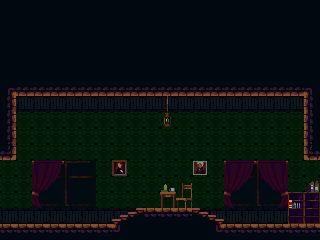
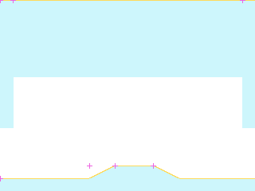
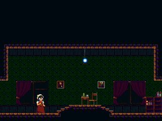

rmCity18
ROOM_085_S001 · ROOM 85 · rectangle [0, 0, 320, 240]


Статическая реконструкция v4; не native gameplay screenshot. Голубой: маски; жёлтый: опоры; розовый: pivot.
Исходный OBJT sprite_index, кадр 0 — исследовательский кандидат

Не исполнены native Create/Step/Draw, shaders, FSM и динамические spawn paths.
Готовность
Статическая основа: ready. Полная native-сцена: blocked_native_audit. Игровая сборка: не создана.
Переработать только подтверждённые статические визуальные слои под будущую авторскую игру. Сохранить сетку, границы, читаемость опор и места стыков. Новые сюжет, сцены и рисунки ещё не утверждены.
Зависимости
Future art direction and target asset classifier · Native actor/spawner/state/VFX audit before complete scene handoff
Рабочая очередность предложена по связности. Исполнитель: художница; личность, сроки и новые рисунки не назначены.
Depth слои: 4, 3, 2, 0. Опоры и ограничения: точные ROOM transforms и отдельные авторские маски; соседство не переосмыслять.
Входы, выходы и соседи
Входы: E084_00, E086_00
Выходы: E085_00, E085_01
{"section": "ROOM_084_S002", "room": 84, "edge": "E085_00", "kind": "authored_transition", "direction": "left", "conditions": "room-level gate evidence; not evaluated", "source_anomaly": null}
{"section": "ROOM_086_S001", "room": 86, "edge": "E085_01", "kind": "authored_transition", "direction": "right", "conditions": "room-level gate evidence; not evaluated", "source_anomaly": null}
Исходные условия и механизмы комнаты
[]
Проверенные assetID
Кандидаты и блокеры
SPRT_464, SPRT_688
Полные авторские placements ↗ · Native-аудит ↗ · Очередь и возвраты ↗